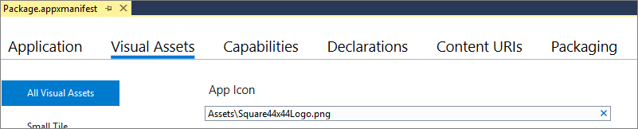

Load images and assets tailored for scale, theme, high contrast, and others
Your app can load image resource files (or other asset files) tailored for display scale factor, theme, high contrast, and other runtime contexts. These images can be referenced from imperative code or from XAML markup, for example as the Source property of an Image. They can also appear in your app package manifest source file (the Package.appxmanifest file)—for example, as the value for App Icon on the Visual Assets tab of the Visual Studio Manifest Designer—or on your tiles and toasts. By using qualifiers in your images' file names, and optionally dynamically loading them with the help of a ResourceContext, you can cause the most appropriate image file to be loaded that best matches the user's runtime settings for display scale, theme, high contrast, language, and other contexts.
An image resource is contained in an image resource file. You can also think of the image as an asset, and the file that contains it as an asset file; and you can find these kinds of resource files in your project's \Assets folder. For background on how to use qualifiers in the names of your image resource files, see Tailor your resources for language, scale, and other qualifiers.
Some common qualifiers for images are:
Qualify an image resource for scale, theme, and contrast
The default value for the scale qualifier is scale-100. So, these two variants are equivalent (they both provide an image at scale 100, or scale factor 1).
\Assets\Images\logo.png
\Assets\Images\logo.scale-100.png
You can use qualifiers in folder names instead of file names. This is a better strategy when you have several asset files per qualifier. For purposes of illustration, these two variants are equivalent to the two above.
\Assets\Images\logo.png
\Assets\Images\scale-100\logo.png
The next example shows how you can provide variants of an image resource—named /Assets/Images/logo.png—for different settings of display scale, theme, and high contrast. This example uses folder naming.
\Assets\Images\contrast-standard\theme-dark
\scale-100\logo.png
\scale-200\logo.png
\Assets\Images\contrast-standard\theme-light
\scale-100\logo.png
\scale-200\logo.png
\Assets\Images\contrast-high
\scale-100\logo.png
\scale-200\logo.png
Reference an image or other asset from XAML markup and code
The name—or identifier—of an image resource is its path and file name with any and all qualifiers removed. If you name folders and/or files as in any of the examples in the previous section, then you have a single image resource and its name (as an absolute path) is /Assets/Images/logo.png. Here's how you use that name in XAML markup.
<Image x:Name="myXAMLImageElement" Source="ms-appx:///Assets/Images/logo.png"/>
Notice that you use the ms-appx URI scheme because you're referring to a file that comes from your app's package. See URI schemes in the UWP documentation. This is how you refer to the same image resource in imperative code.
this.myXAMLImageElement.Source = new BitmapImage(new Uri("ms-appx:///Assets/Images/logo.png"));
You can use ms-appx to load any arbitrary file from your app package.
var uri = new System.Uri("ms-appx:///Assets/anyAsset.ext");
var storagefile = await Windows.Storage.StorageFile.GetFileFromApplicationUriAsync(uri);
The ms-appx-web scheme accesses the same files as ms-appx, but in the web compartment.
<WebView x:Name="myXAMLWebViewElement" Source="ms-appx-web:///Pages/default.html"/>
this.myXAMLWebViewElement.Source = new Uri("ms-appx-web:///Pages/default.html");
For any of the scenarios shown in these examples, use the Uri constructor overload that infers the UriKind. Specify a valid absolute URI including the scheme and authority, or just let the authority default to the app's package as in the example above.
Notice how in these example URIs the scheme ("ms-appx" or "ms-appx-web") is followed by "://" which is followed by an absolute path. In an absolute path, the leading "/" causes the path to be interpreted from the root of the package.
Note
The ms-resource (for string resources) and ms-appx(-web) (for images and other assets) URI schemes perform automatic qualifier matching to find the resource that's most appropriate for the current context. The ms-appdata URI scheme (which is used to load app data) does not perform any such automatic matching, but you can respond to the contents of ResourceContext.QualifierValues and explicitly load the appropriate assets from app data using their full physical file name in the URI. For info about app data, see Store and retrieve settings and other app data. Web URI schemes (for example, http, https, and ftp) do not perform automatic matching, either. For info about what to do in that case, see Hosting and loading images in the cloud.
Absolute paths are a good choice if your image files remain where they are in the project structure. If you want to be able to move an image file, but you're careful that it remains in the same location relative to its referencing XAML markup file, then instead of an absolute path you might want to use a path that's relative to the containing markup file. If you do that, then you needn't use a URI scheme. You will still benefit from automatic qualifier matching in this case, but only because you are using the relative path in XAML markup.
<Image Source="Assets/Images/logo.png"/>
Also see Tile and toast support for language, scale, and high contrast.
Reference an image or other asset from a class library
You can load images and other resources from a referenced Class library (WinUI 3 in Desktop) project by referencing the resource in a URI that uses the ms-appx scheme. The URI should include the name of the class library project and the path to the resource within the class library project. For example, if you have a class library project named MyClassLibrary that contains an image named logo.png in a folder named Assets, you can reference the image in your app project like this:
<Image Source="ms-appx:///MyClassLibrary/Assets/logo.png"/>
You'll use this same URI format to reference resources in a class library from XAML markup or from code. For example, you can use the following code to load the image from your class library and put it into a StorageFile object:
private async Task<DateTimeOffset> GetLogoCreatedDateAsync()
{
Uri uri = new($"ms-appx:///MyClassLibrary/Assets/logo.png");
Windows.Storage.StorageFile file =
await Windows.Storage.StorageFile.GetFileFromApplicationUriAsync(uri);
return file.DateCreated;
}
Note that you can reference images from the class library from both the app project and the class library project itself.
Qualify an image resource for targetsize
You can use the scale and targetsize qualifiers on different variants of the same image resource; but you can't use them both on a single variant of a resource. Also, you need to define at least one variant without a targetsize qualifier. That variant must either define a value for scale, or let it default to scale-100. So, these two variants of the /Assets/Square44x44Logo.png resource are valid.
\Assets\Square44x44Logo.scale-200.png
\Assets\Square44x44Logo.targetsize-24.png
And these two variants are valid.
\Assets\Square44x44Logo.png // defaults to scale-100
\Assets\Square44x44Logo.targetsize-24.png
But this variant is not valid.
\Assets\Square44x44Logo.scale-200_targetsize-24.png
Refer to an image file from your app package manifest
If you name folders and/or files as in either of the two valid examples in the previous section, then you have a single app icon image resource and its name (as a relative path) is Assets\Square44x44Logo.png. In your app package manifest, simply refer to the resource by name. There's no need to use any URI scheme.

That's all you need to do, and the OS will perform automatic qualifier matching to find the resource that's most appropriate for the current context. For a list of all items in the app package manifest that you can localize or otherwise qualify in this way, see Localizable manifest items.
Qualify an image resource for layoutdirection
See Mirroring images.
Load an image for a specific language or other context
For more info about the value proposition of localizing your app, see Globalization and localization.
The default ResourceContext contains a qualifier value for each qualifier name, representing the default runtime context (in other words, the settings for the current user and machine). Image files are matched—based on the qualifiers in their names—against the qualifier values in that runtime context.
But there might be times when you want your app to override the system settings and be explicit about the language, scale, or other qualifier value to use when looking for a matching image to load. For example, you might want to control exactly when and which high contrast images are loaded.
You can do that by constructing a new ResourceContext (instead of using the default one), overriding its values, and then using that context object in your ResourceMap image lookups with GetValue or TryGetValue.
var resourceManager = new Microsoft.Windows.ApplicationModel.Resources.ResourceManager();
var resourceContext = resourceManager.CreateResourceContext();
resourceContext.QualifierValues["Contrast"] = "high";
var resourceMap = resourceManager.MainResourceMap;
var namedResource = resourceMap.TryGetValue(@"Files/Assets/Logo.png", resourceContext);
var imageFileBytes = namedResource.ValueAsBytes;
using (var ms = new InMemoryRandomAccessStream())
{
using (var writer = new DataWriter(ms.GetOutputStreamAt(0)))
{
writer.WriteBytes(imageFileBytes);
writer.StoreAsync().GetResults();
}
var image = new BitmapImage();
image.SetSource(ms);
this.myXAMLImageElement.Source = image;
}
By default, the ResourceManager class uses the default ResourceContext.
Important APIs
The following APIs are imporant to understand when working with image resources: